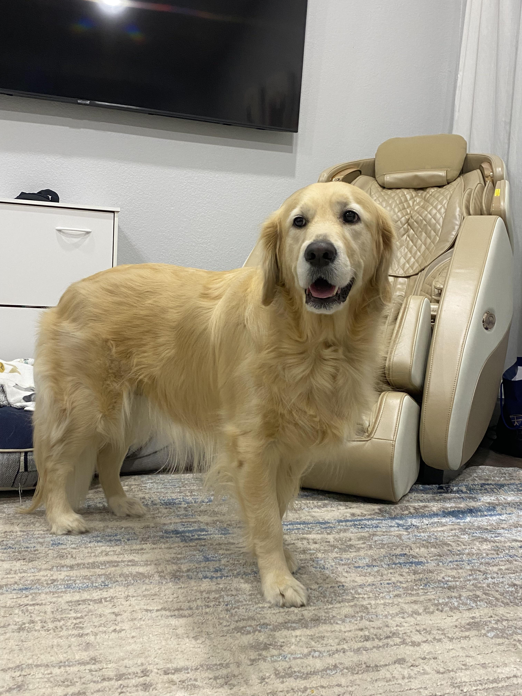
Thor
Necesita comida premium por 3 meses

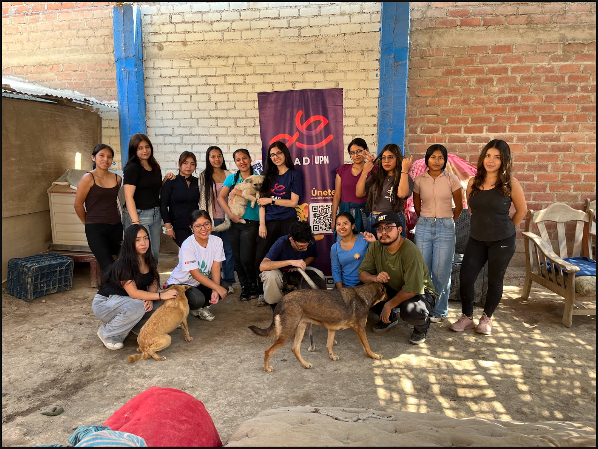
Cada perrito merece un hogar y suficiente comida. Únete para cambiar vidas.
Ver perritos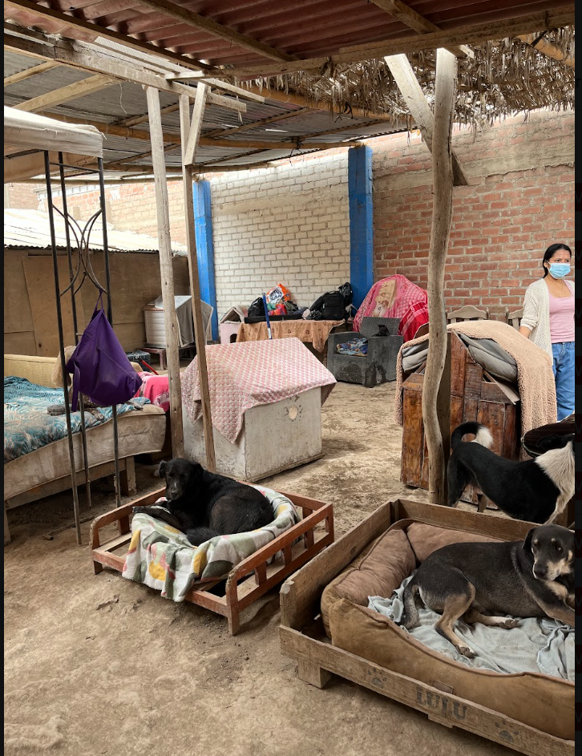
Conoce a los perritos que sueñan con una familia como la tuya.
Adoptar ahora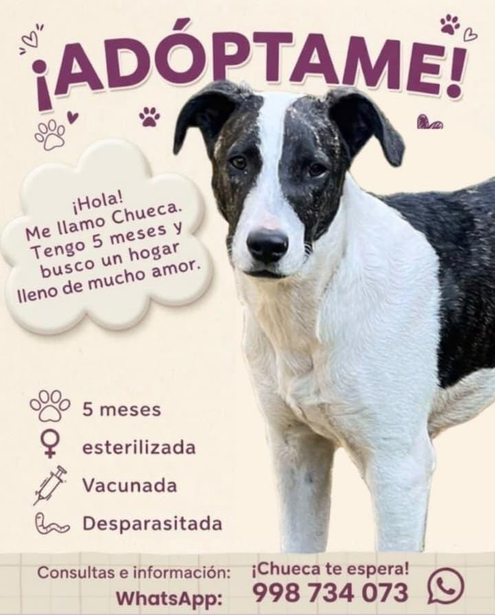
Con una bolsa de comida ayudas a que un perrito crezca sano y feliz.
Donar ahora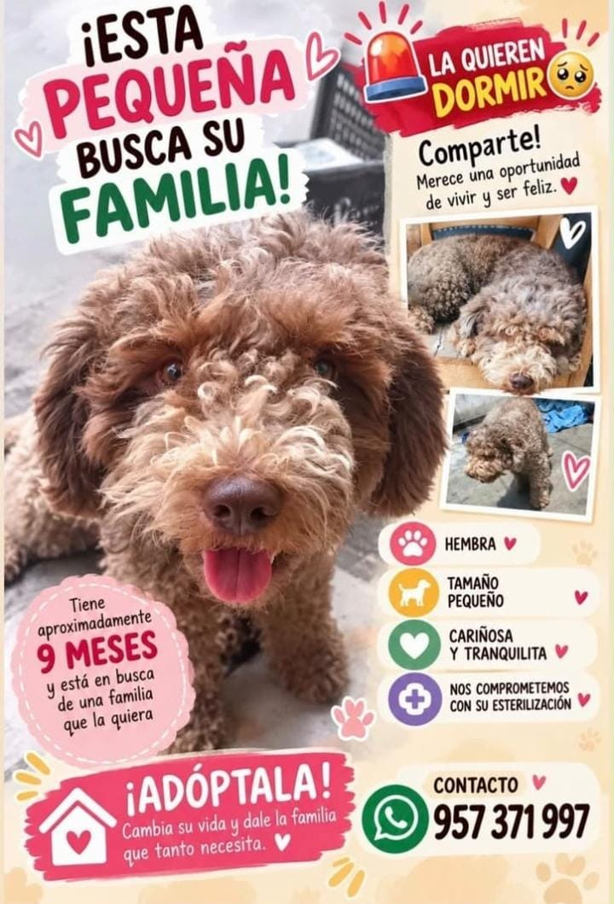
Más de 500 bolsas de comida entregadas y muchos finales felices.
Conocer másCada perrito merece un hogar y suficiente comida. Únete a nosotros para cambiar vidas.
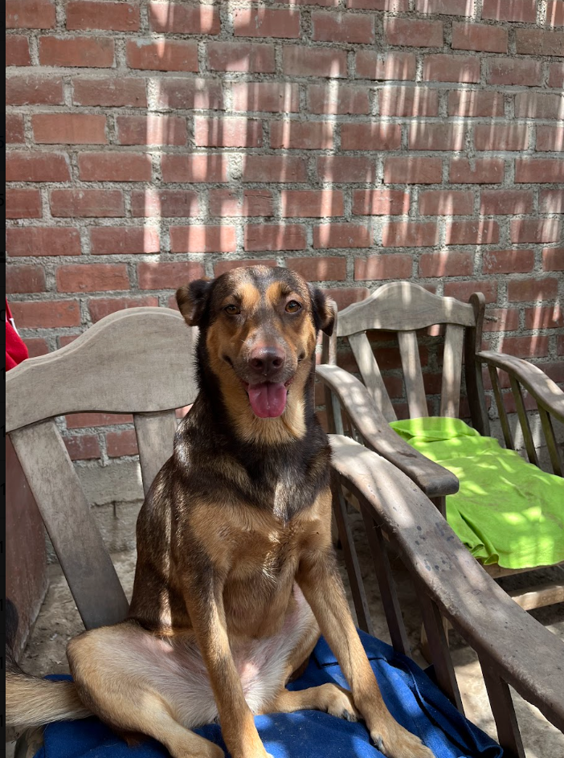
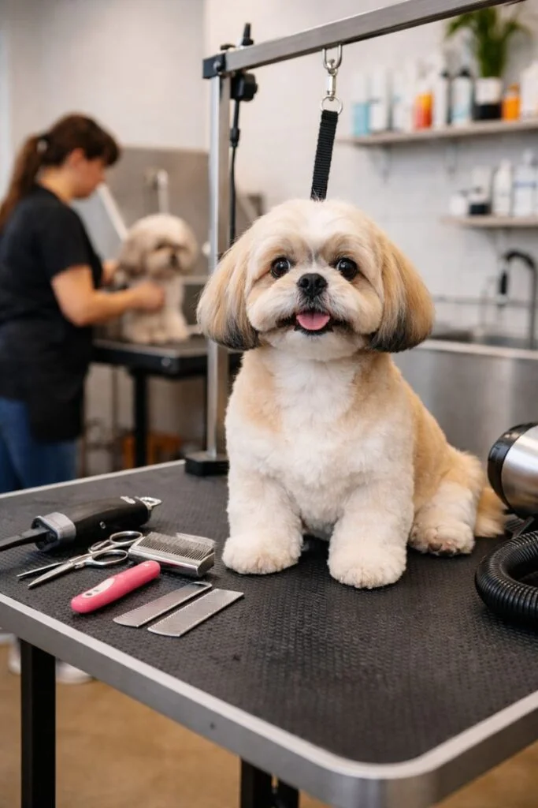
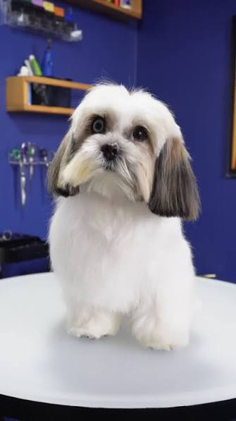
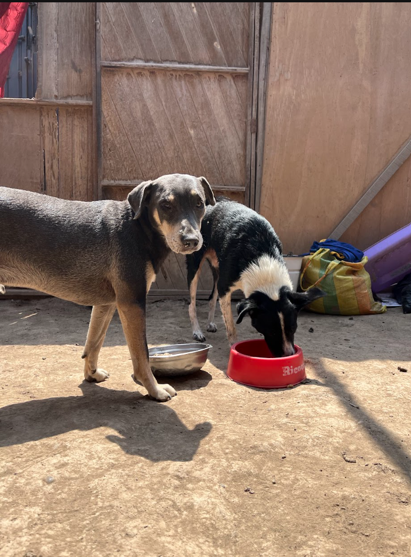
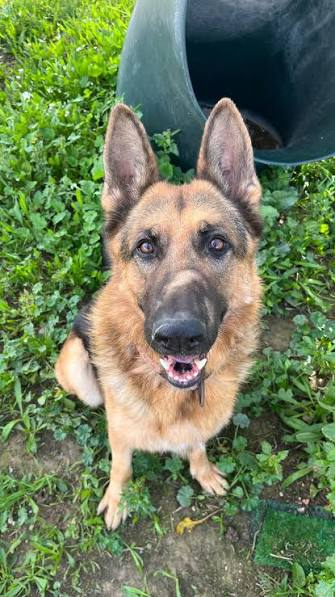
Encuentra a tu nuevo mejor amigo

Necesita comida premium por 3 meses
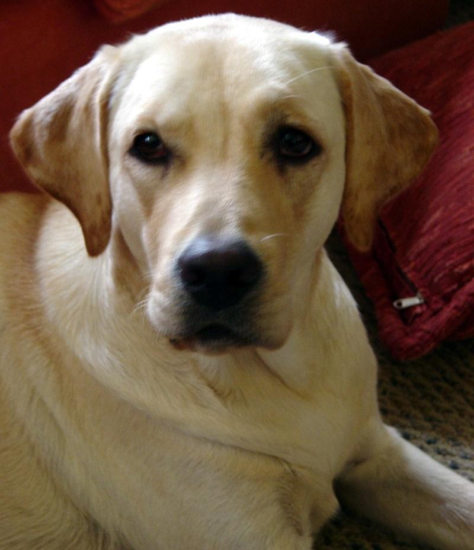
Necesita comida por 6 meses
Necesita comida por 4 meses
De la calle a un hogar con suficiente comida
AdoptaMe nace con la misión de asegurar que ningún perrito pase hambre. Cada historia que llega a nuestras manos es única, pero todas comparten un final posible: el amor de un hogar y el plato lleno de comida.
500+ bolsas de comida entregadas hasta ahora.
"Nunca imaginé que volvería a confiar en los humanos, hasta que llegó mi familia."
Thor, adoptado en 2024
Con tu donación de comida, podemos seguir rescatando y alimentando a más perritos necesitados. Cada granito cuenta.
Donar ahora